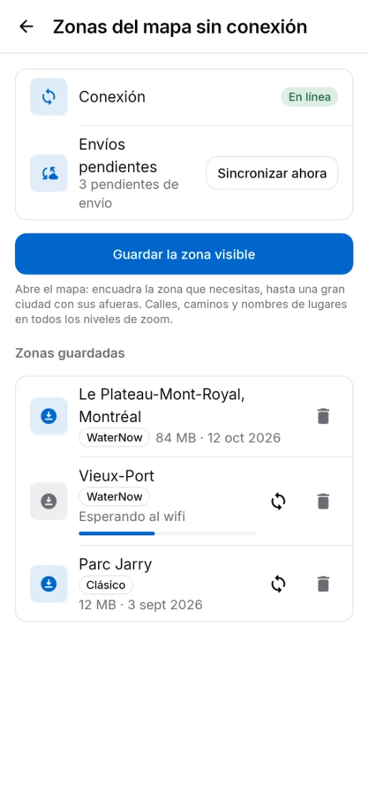
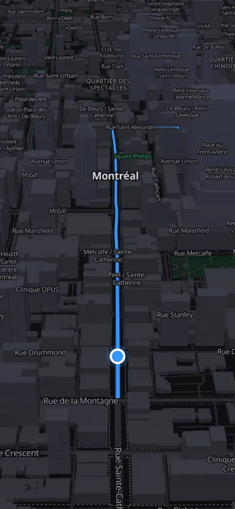

Montreal · Quebec, Canadá
Encuentra agua y baños gratis en Montreal
El Viejo Puerto, el monte Royal, el Plateau, el canal de Lachine: vayas donde vayas, WaterNow te muestra los puntos de agua y los baños gratis a tu alrededor, y te lleva hasta ellos.
Descargar para Android- Gratis
- Sin anuncios
- Sin cuenta

Por qué WaterNow
Gratis
El mapa, la búsqueda, las indicaciones y los mapas sin conexión son gratis, para siempre.
Sin anuncios
Ninguna publicidad, en ninguna parte de la app.
Sin cuenta
Con el modo invitado puedes explorar el mapa, obtener indicaciones y registrar tus recargas.
Sin conexión
Guarda tu ciudad: el mapa y sus puntos funcionan sin conexión.
Navegación paso a paso
A pie, en bici o en coche, con una voz que anuncia cada giro.
Accesible y para perros
Filtros para ver solo los puntos accesibles, o los que tienen agua para tu perro.
7 idiomas
Español, inglés, francés, alemán, portugués, japonés y rumano.
Privacidad ante todo
Sin rastreadores. Tu ubicación sirve para encontrar el agua a tu alrededor, y puedes exportar o eliminar tus datos cuando quieras.
Así es la app


Cómo funciona
Descarga la app
Gratis, para Android, directamente desde este sitio.
Ábrela, con o sin cuenta
Continúa como invitado o crea una cuenta: tú eliges.
Déjate guiar
Elige un punto de agua o unos baños cerca de ti y sigue las indicaciones.
Preguntas frecuentes
¿WaterNow es gratis?
Sí. El mapa, la búsqueda, las indicaciones y los mapas sin conexión son gratis y sin anuncios. Hay extras opcionales, pero todo lo útil sigue siendo gratis.
¿Necesito una cuenta?
No. Como invitado puedes explorar el mapa, obtener indicaciones y registrar tus recargas. Con una cuenta también puedes añadir puntos, reseñas y fotos.
¿Funciona sin conexión?
Sí. Guarda la zona que necesites, hasta una gran ciudad y sus alrededores: el mapa y sus puntos funcionan luego sin conexión.
¿En qué teléfonos funciona?
En Android. El botón descarga la app directamente desde este sitio, y Android te pide que permitas la instalación.
¿Sed en Montreal?
Descarga WaterNow y mira el agua y los baños gratis a tu alrededor.
Descargar para Android